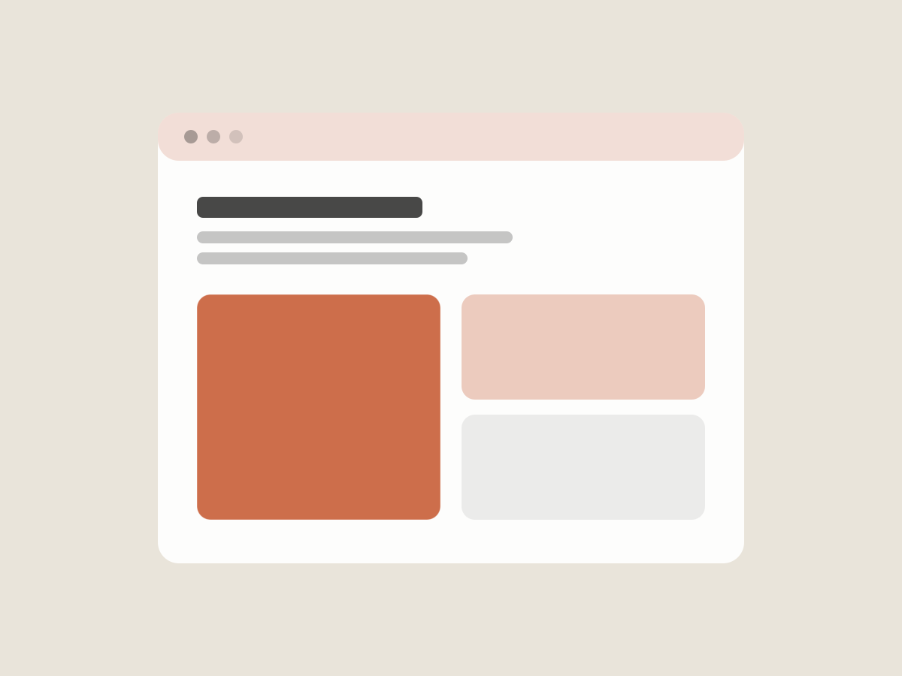
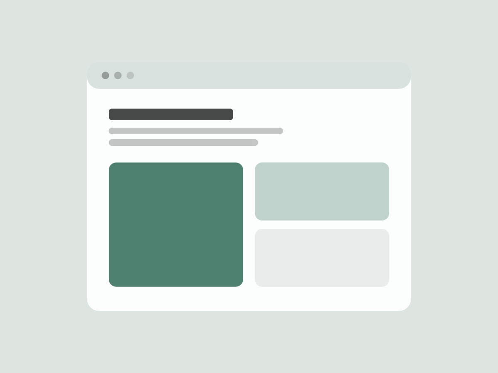
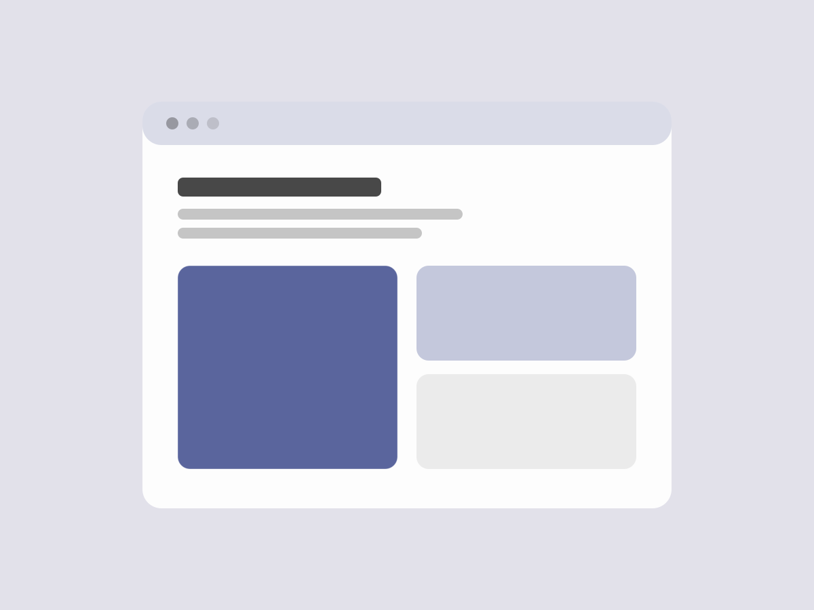

Work
Selected case studies
A few projects that show how I approach problems — the research, the trade-offs and the final design.

Making first-time investing feel calm
Redesigning onboarding and the first-purchase flow of a retail investing app so new users understand what they're buying before they commit.

A scheduling tool clinic staff actually like
Rethinking the daily schedule view for a multi-location clinic, from shadowing front-desk teams to a design system the engineers could ship.

Turning reporting into answers
Restructuring an analytics dashboard around the questions customers ask, not the data the product happens to store.
Want the full story?
I'm happy to walk you through any of these projects in more depth.
Get in touch